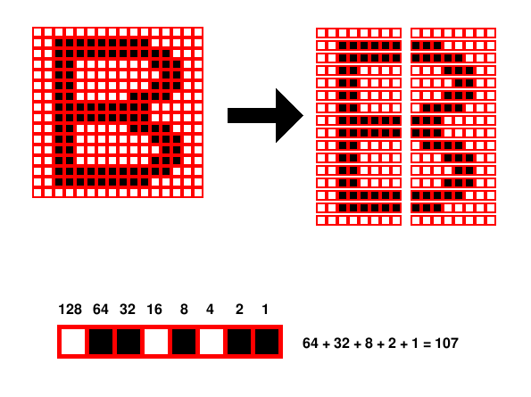
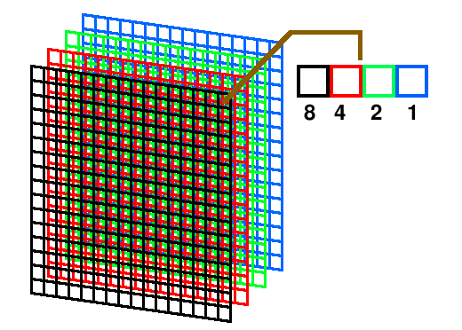

GAG is a big program (nearly 26 Kbytes) so it can't fit in the MBR (446 usefull bytes); that's why it's divided in two parts: the bootstrap, and gag itself.
The bootstrap is a little piece of code stored in the MBR itself (or in the floppy's first sector when gag is installed in a floppy disk). For hard disks, the code is LOAD2 (line 2348), and for floppies is LOAD1 (line 2559). After being loaded at 0000:7C00h by the BIOS, the code relocates itself at 000:0600h
After being loaded, in the case of a hard disk the code checks the keys SHIFT, ALT and CNTRL. If one of them is pressed, the user wants to use the SafeBoot feature, so it boots the partition marked as active in the partition table.
If none of that keys are pressed, or if GAG is installed in a floppy disk, the code loads the next 62 sectors (if hard disk) or four tracks (72 sectors, if floppy disk) at 1000:017Fh. This is the code map:
| Offset | Size (bytes) | Content |
| 017Fh | 1 | Keyboard type |
| 0180h | 1 | Hide partitions |
| 0181h | 1 | Boot timer (in seconds) |
| 0182h | 1 | Default operating system |
| 0183h | 15 | Setup password |
| 0192h | 1 | Use setup password |
| 0193h | 360 | Table with the list of operating systems (see above) |
| 02FBh | 1 | End of table (byte with FFh value) |
| 02FCh | 4 | GAG's signature |
| 0300h | ? | GAG's run code |
| ? | ? | Keyboard translation tables (see above) |
| ? | ? | Color palette (see above) |
| ? | ? | Text messages (see above) |
| ? | ? | Text font (see above) |
| ? | 1 | Number of available icons |
| ? | ? | Icons (see above) |
| ? | 4 | Version number |
| ? | ? | Temporal data |
The configuration data is located always at the start. In the disk it's at the first byte, and in memory is at offset 017Fh, as seen in the table. That means that a possible external configuration program can find without risk the data and update it.
The keyboard type possible values are 0: QUERTY, 1: AZERTY, 2: QWERTZ, 3: DVORAK or 4: Cyrillic. There's a EQU statement, named LAST_KEYBOARD, set to the last ASCII type keyboard in the list. Currently it points to the DVORAK one. In some parts, GAG converts uppercase keystrokes to lowercase ones. In keyboards like the Cyrillic (where, to allow the user to type both Cyrillic and Latin chars, the lowercase letters are Cyrillic and the uppercase are Latin), that conversion must be avoided.
GAG 4.11: The Hide partitions value can be 0, which means that none of the the primary partitions on the boot drive are hidden, 1 which means only partions before the one being booted are hidden, or 2 which means that only the primary partition being booted will be visible. This value corresponds to and is set by the option Hide primary partitions at the main menu.
The Boot timer field contains the number of seconds to wait before launching the default operating system. If the value is 0 there will not be any timer (GAG will wait forever).
The Default operating system field contains the operating system to boot when the timer expires, plus 48. This is: 49 for the first operating system, 50 for the second, and so on.
The Setup password contains the password for the Setup menu. It must be completed with blank spaces (ASCII 32).
If the field Use setup password is 0 GAG will not ask the setup password; if its value is 1 then GAG will ask it.
The table with all the currently configured operating systems is located at offset 0193h. This table contains 9 entries, each one with this format:
| Field number | Offset | Size (bytes) | Content |
| 0 | 00h | 1 | Icon number |
| 1 | 01h | 15 | Name |
| 2 | 10h | 1 | Disk drive |
| 3 | 11h | 1 | Disk head/LBA byte 0 |
| 4 | 12h | 1 | Disk sector/LBA byte 1 |
| 5 | 13h | 1 | Disk track/LBA byte 4 |
| 6 | 14h | 1 | Has password |
| 7 | 15h | 15 | Password |
| 8 | 24h | 1 | Swap drive |
| 9 | 25h | 1 | LBA byte 2 |
| A | 26h | 1 | LBA byte 3 |
| B | 27h | 1 | Use CHS/LBA mode |
The field 0 (the first byte) contains the icon used for this entry. There are two special values:
The order is the same that you can see when GAG asks the user for an icon:
The field 1 contains the name for that entry. It must be completed to 15 characters with blank spaces (ASCII 32).
The field 2 contains the disk drive to boot. It can contain the following values:
The bit 0 in the field 0Bh determines if booting this operating system must be done using CHS (bit clear or 0) or LBA (bit set or 1). If its value is 0, then the fields 3, 4 and 5 contains the head, sector and track of the partition's first sector, and values of fields 9 and A are discarded. But if the value is 1, then GAG will use LBA access, and the sector's number is composed with fields 3, 4, 9, A and 5. Byte 0 is the less significant, and byte 4 the most significant. The last 3 bytes needed to create an LBA address must be set to 0.
So, to compose the LBA address, just compose it this way:
| bit 56-63 | bit 48-55 | bit 47-40 | bit 39-32 | bit 31-24 | bit 23-16 | bit 15-8 | bit 7-0 |
| 0 | 0 | 0 | Field 5 | Field A | Field 9 | Field 4 | Field 3 |
If the field 6 is 0, this entry has no password. But if its value is 1, then GAG will ask for the password stored (and completed with blank spaces, ASCII 32) in field 7.
Finally, the field 8 contains the drive unit to swap with the first disk drive. If this field contains 0, then there will be no drive swap. But if its value is XX then GAG will install a piece of resident code that will capture all calls made to INT13h (hard disk access). If the call wants to read from drive 80h, the resident will change it to XX, and if the desired disk was XX, it will change it to 80h, so both drive accesses will be efectively swapped.
The WAITKEY function reads the keyboard. To allow multilanguage support, it must know the relationships between the QWERTY North American keyboard (the one the BIOS assumes the user has) and the specific keyboard the user actually has. To do this, there are five translation tables which maps each ASCII character to the desired character. Each table entry has a length of two bytes, where the first byte contains the received character (the one returned by the BIOS call), and the second one contains the character to return.
The shorter example is the QWERTZ keyboard, where letters Y and Z are inverted. This is the table:
DB "Z","Y"
DB "Y","Z"
DB "z","y"
DB "y","z"
DB 0
The first entry has the uppercase Z letter as character to substitute, and the uppercase Y as new character; so when the user presses the Z key, GAG will find this entry and WAITKEY will return a letter Y instead of a Z.
The end of table is a single zero byte.
To add a new table one must modify the WAITKEY function. Near its end is a little piece of code which loads in SI the offset of the desired table, based in the value of the KEYBOARD TYPE config variable.
GAG works in the 16 colour, 4 bit-per-pixel, 640x480 VGA mode. Currently GAG uses this palette:
| 000000 | 808080 | C0C0C0 | C08080 | FFFFFF | C00000 | 00C000 | E0B008 | AC7C20 | C8C800 | 0000C0 | 800000 | 00C0C0 | C04040 | 282470 | 008000 |
The text messages are stored in independant files and folders, one for each available language. The file must be named messages.msg, and contains all the sentences used in GAG. Each sentence has a maximum length, and some must be completed with blank spaces (ASCII 32) to have a fixed length.
GAG uses its own text font. This allows to use non-ASCII charsets.
The font used in GAG has a size of 16x16 pixels, and each letter is stored as a bitmap graphic, starting at the label character. Each character is defined as 32 bytes, following this scheme:

Each group of 8x1 pixels in converted to a decimal value using the scheme showed in the lower part (in other words: it is asumed that a black pixel is a binary '1', and a background pixel is a binary '0'). The bytes are stored following a zig-zag sequence: first the upper left, second the upper right, third the left one of the second line, fourth the right one of the second line, and so on.
To save space, we store only the defined characters, and not the 256 possible ones. To find a defined character there's a table located just before the font bitmaps, at the label chartable. Each entry has three bytes and defines a range of characters. The first byte is the first character code valid for this range, the second byte is the last character code valid for this range, and the third byte is the value to be substracted from the character desired to know the offset in the current font table.
Let's see an example to understand this better. Suppose we have this font map:
| 0 | 1 | 2 | 3 | 4 | 5 | 6 | 7 | 8 | 9 | A | B | C | D | E | F | |
| 0 | ||||||||||||||||
| 1 | ||||||||||||||||
| 2 | ! | " | # | $ | % | & | ' | ( | ) | * | + | , | - | . | / | |
| 3 | 0 | 1 | 2 | 3 | 4 | 5 | 6 | 7 | 8 | 9 | : | ; | < | = | > | ? |
| 4 | @ | A | B | C | D | E | F | G | H | I | J | K | L | M | N | O |
| 5 | P | Q | R | S | T | U | V | W | X | Y | Z | [ | \ | ] | ^ | _ |
| 6 | ` | a | b | c | d | e | f | g | h | i | j | k | l | m | n | o |
| 7 | p | q | r | s | t | u | v | w | x | y | z | { | | | } | ~ | © |
| 8 | é | |||||||||||||||
| 9 | ||||||||||||||||
| A | á | í | ó | ú | ñ | Ñ | ||||||||||
| B | ||||||||||||||||
| C | ||||||||||||||||
| D | ||||||||||||||||
| E | ||||||||||||||||
| F |
We create the bitmaps for each letter and store them in memory, having this bitmap table:
| 0 | 1 | 2 | 3 | 4 | 5 | 6 | 7 | 8 | 9 | A | B | C | D | E | F | |
| 0 | ! | " | # | $ | % | & | ' | ( | ) | * | + | , | - | . | / | |
| 1 | 0 | 1 | 2 | 3 | 4 | 5 | 6 | 7 | 8 | 9 | : | ; | < | = | > | ? |
| 2 | @ | A | B | C | D | E | F | G | H | I | J | K | L | M | N | O |
| 3 | P | Q | R | S | T | U | V | W | X | Y | Z | [ | \ | ] | ^ | _ |
| 4 | ` | a | b | c | d | e | f | g | h | i | j | k | l | m | n | o |
| 5 | p | q | r | s | t | u | v | w | x | y | z | { | | | } | ~ | © |
| 6 | é | á | í | ó | ú | ñ | Ñ |
But in this table we compacted the characters, so we have to define a chartable that allows us to map the original codes to the new ones. If we see the original table, we found three sections: the one from 20h up to 7Fh, the one for 82h, and the one from A0 up to A5.
We must map values 20h-7Fh to values 0h-5F, value 82h to 60h, and values A0h-A5h to 61h-66h, so the conversion table must be:
20h,7Fh,20h,82h,82h,22h,A0h,A5h,3Fh,0
So, when we print a character between 20h and 7Fh, we substract 20h from it and print that character from out character table. If we print the character 82h, we substract 22h (now it is 60h) and print that character. If we print a character between A0h and A5h, we substract 3Fh (converting it to a value between 61h-66h), and print that character.
Any character code that doesn't fall in one of the groups will be printed as the first character (ussually a blank space).
GAG, through use of language message files and associated font files, supports a multilangual interface. The main font is the ASCII keyboard set plus vowels having accent marks depicted in the table above. For additional letters (accented vowels, etc.) a character bitmap must be defined and added to the basic font table. To translate the message to any language one desires first translate the message strings in messages.msg for English. If any special letters with diacritical marks are needed these too must be created and added to the font table (at least for that language) as long as they fall within the interantional Latin extended charset. For languages using other than the extanded Latin Alphabet a complete font must be created and mapped to the computer keyboard ASCII output.
Icons are stored as 4-bit bitmaps, and its size is 40x40 pixels. To simplify the code in GAG, the icons are stored as four monocrome planes, containing each plane one bit of the pixel's color. Here's a picture:

Since the process is certainly complex to be done "by hand", there's a little C program, called gagicon.c that creates the source code for an icon from a picture created with the GIMP. This program aproximates the colors in the original image with the nearest in GAG's palette, splits the picture in four planes and dumps them as asembler source code, ready to be copy&paste in the source code. To use it, you must follow these steps:
If you add an icon to the source code, don't forget to update the number of icons available (It is a DB located just before the first icon).